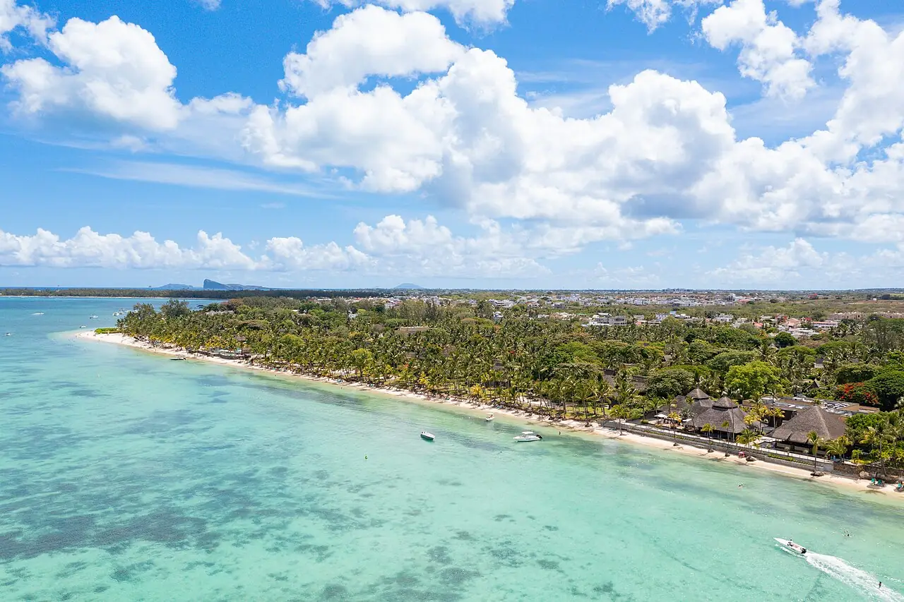

Trou aux Biches
Pamplemousses, Maurice · snorkeling, baignade, plongée

Longue plage bordée de filaos sur la côte nord-ouest de Maurice, protégée par le récif. Le lagon calme et clair convient à la baignade et au snorkeling, et plusieurs centres de plongée partent d’ici.
- Lieu
- Pamplemousses, Maurice
- Niveau
- Débutant
- Activités
- snorkeling, baignade, plongée
- Type d'eau
- Mer / océan
- Coordonnées
- -20.04, 57.54 (position approximative du secteur)
Dangers à connaître
- Bateaux et engins nautiques dans le lagon.
- Oursins et poissons-pierres possibles : garde des chaussons.
Le conseil d'Ocean Buddy
Snorkel tôt le matin, avant le passage des bateaux, et reste dans les zones de baignade balisées.
Ouvrir dans Ocean Buddy Télécharger sur l'App Store
Source : Fiche Ocean Buddy · septembre 2026 · à vérifier localement.